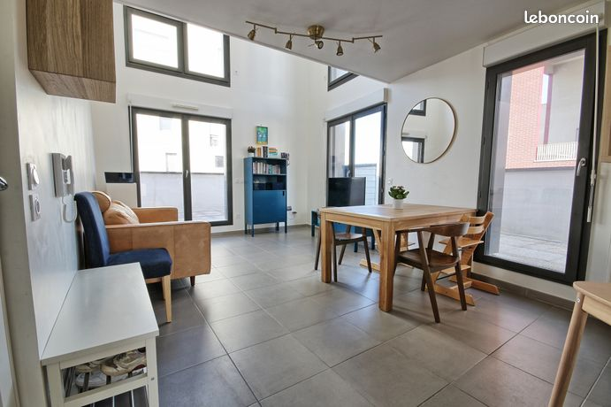

Duplex T4 avec terrasse et parking - Bordeaux Bacalan
Bacalan, Bassins à flots, proche tramway B arrêt Achard, quartier Bordeaux Maritime, Bordeaux 33300

Informations
- Statut
- En attente
- Adresse
- Bacalan, Bassins à flots, proche tramway B arrêt Achard, quartier Bordeaux Maritime, Bordeaux 33300
- Bien
- Duplex T4 avec terrasse et parking
- Année
- 2019
- Exposition
- Est-Ouest
- Vendeur
- IBM, Immobilier Bordeaux Métropole
- Téléphone
- +33 5 81 84 28 99
- Date
- 2026-06-25
Description
Duplex 4 pièces 86 m²
Exclusif, idéalement situé dans le quartier de Bacalan (Bassins à flots), duplex F4 de 86m2 (84m2 carrez) en excellent état avec terrasse de 56m2 proche du tramway B (arrêt Achard). Situé au dernier étage, profitez d'un grand séjour lumineux avec triple exposition et plafond cathédrale, d'une cuisine ouverte aménagée avec accès terrasse et d'une salle d'eau/buanderie avec WC. A l'étage, retrouvez 3 grandes chambres (dont une avec salle d'eau) et une salle de bain avec WC. Grande terrasse de 56m2 ouverte sur l'ensemble du rdc de l'appartement, offrant une luminosité exceptionnelle. Situé au 5e et dernier étage d'une résidence construite en 2019 avec ascenseur, local vélo et place de stationnement privative dans un parking fermé et sécurisé. Idéalement localisé à proximité de toutes commodités. Tramway et bus, commerces, écoles, parcs et jardins, Halles de Bacalan... Honoraires à la charge acquéreur compris dans le prix de vente affiché
Les informations sur les risques auxquels ce bien est exposé sont disponibles sur le site Géorisques : www.georisques.gouv.fr Les informations sur les risques auxquels ce bien est exposé sont disponibles sur le site Géorisques : www.georisques.gouv.fr
Surface : 86 m²
A propos de la copropriété :
Pas de procédure en cours
Nombre de lots : 100
Date de réalisation du diagnostic énergétique : 15/04/2025
Consommation énergie primaire : 124 kWh/m²/an
Consommation énergie finale : 118 kWh/m²/an
Montant estimé des dépenses annuelles d'énergie pour un usage standard : entre 820 € et 1 170 € sur les années 2021, 2022 et 2023 (abonnements compris).